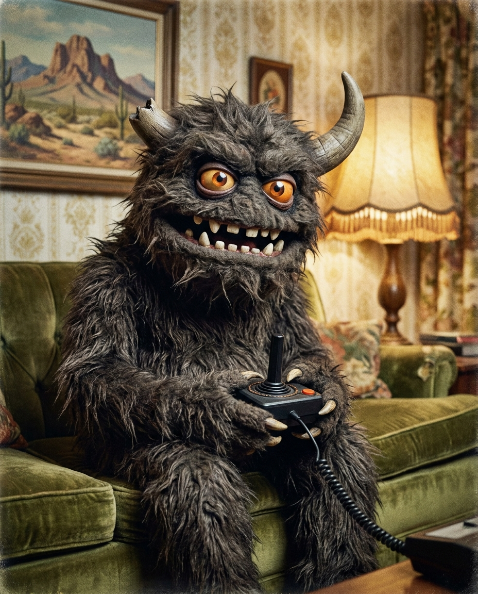
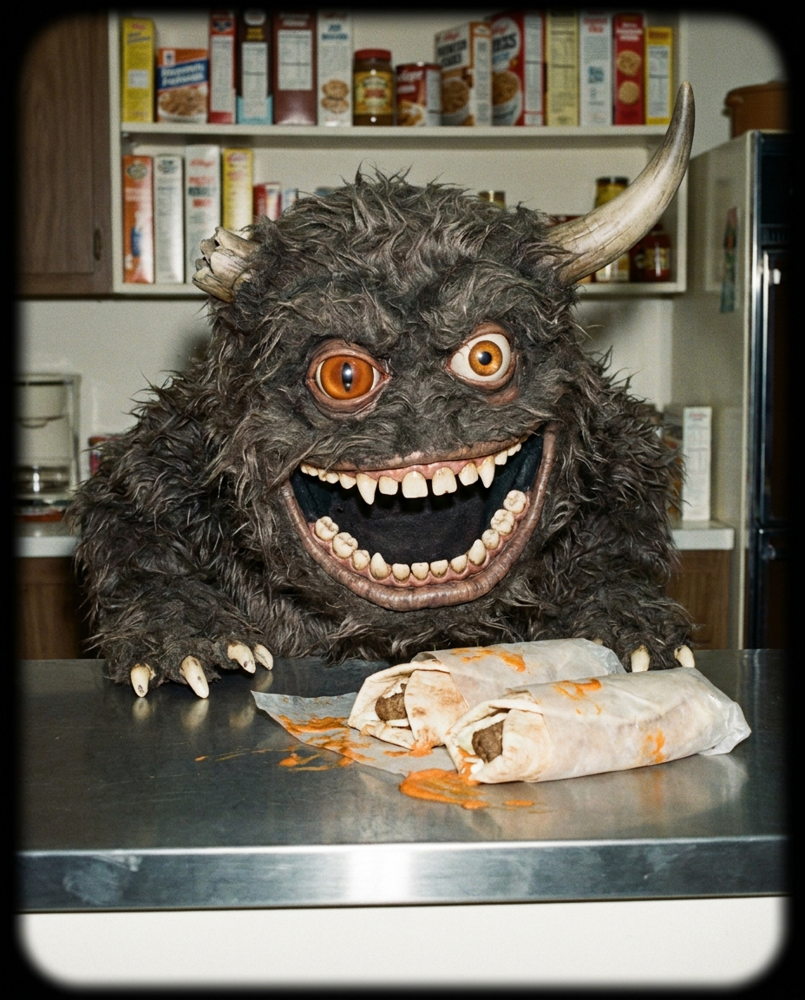
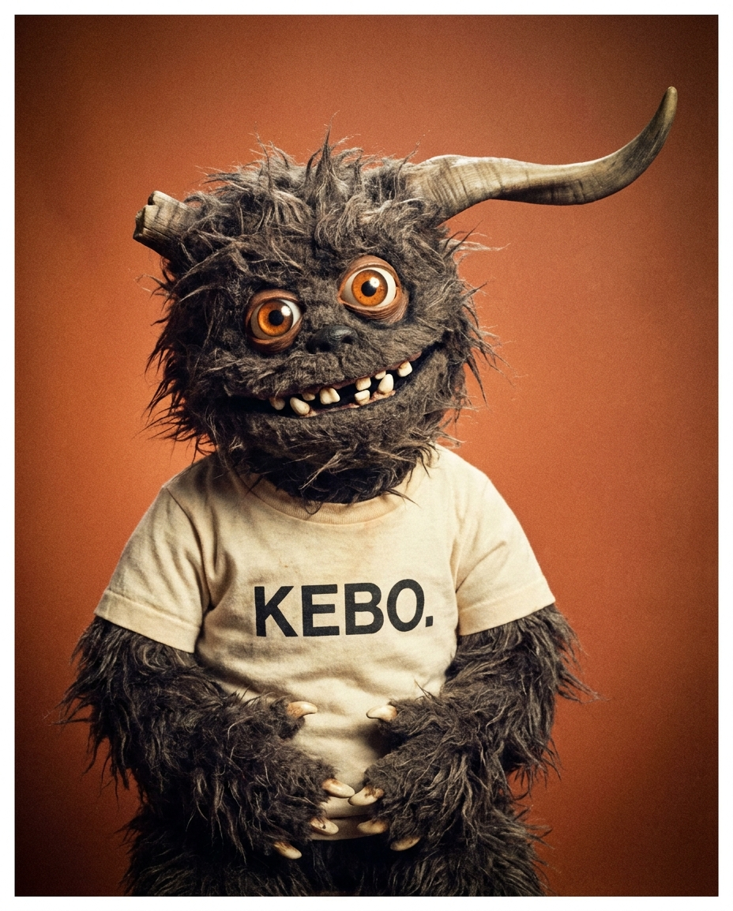
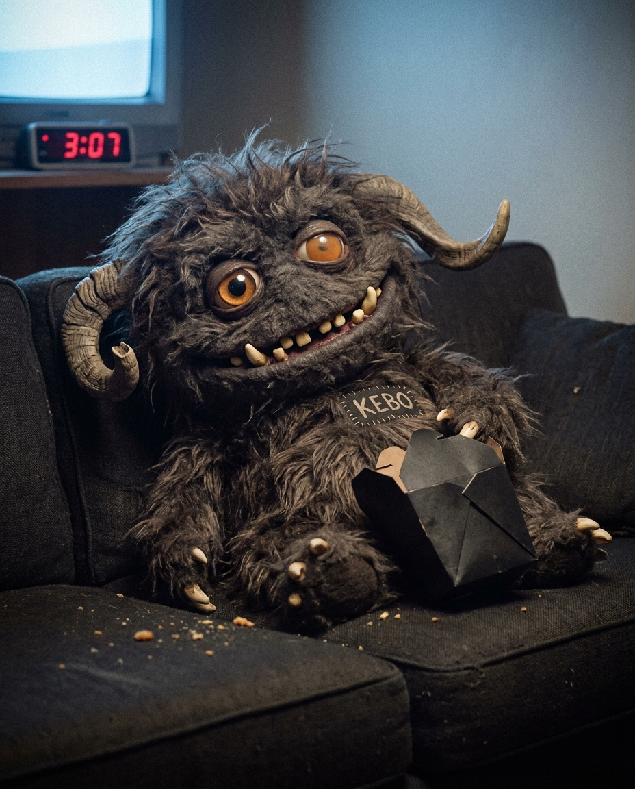

La criatura existe: puppet de efectos prácticos, película análoga, situaciones mundanas. El logo es tinta plana — pero el FEED es esto: KEBO de pelo real, ojos de vidrio, sentado en un sillón de Morelia a las 3 AM. Terror doméstico con hambre.




EL ARCHIVO ES LA VOZ DEL FEED: TERROR DOMÉSTICO CON HAMBRE — LA CRIATURA EXISTE, VIVE EN MORELIA Y PIDE COMO TÚ. IDENTIDAD INTACTA EN LAS 4: CUERNO IZQUIERDO ROTO, OJOS DE VIDRIO DESIGUALES, DIENTES CHUECOS, GARRAS HUESO.
Puppet, no CGI. La criatura siempre se ve de utilería: pelo real, ojos de vidrio, costuras honestas. Nunca render 3D pulido — el encanto ES la imperfección análoga.
Película, no filtro. Grano, viñeta, colores lavados 70s-80s. Luz de lámpara y de TV, nunca luz de estudio perfecta (salvo el retrato, que ES foto de estudio setentera).
Situaciones mundanas. El monstruo nunca ataca: espera su pedido, pierde en el videojuego, se queda dormido con la caja en la panza. La comedia es que vive como tú.
Identidad intacta: cuerno derecho largo + izquierdo ROTO, ojos ámbar de vidrio (el izquierdo más grande), dientes chuecos, garras hueso. Cambia el medio, nunca el personaje.
Producción: generadas con Nano Banana Pro usando el bloque de identidad de PROMPTS-MODO-C.md — ahí está el banco de 6 escenas futuras (el gym, la combi, el acueducto, la lluvia, el fut, la navideña) listas para la siguiente ronda.